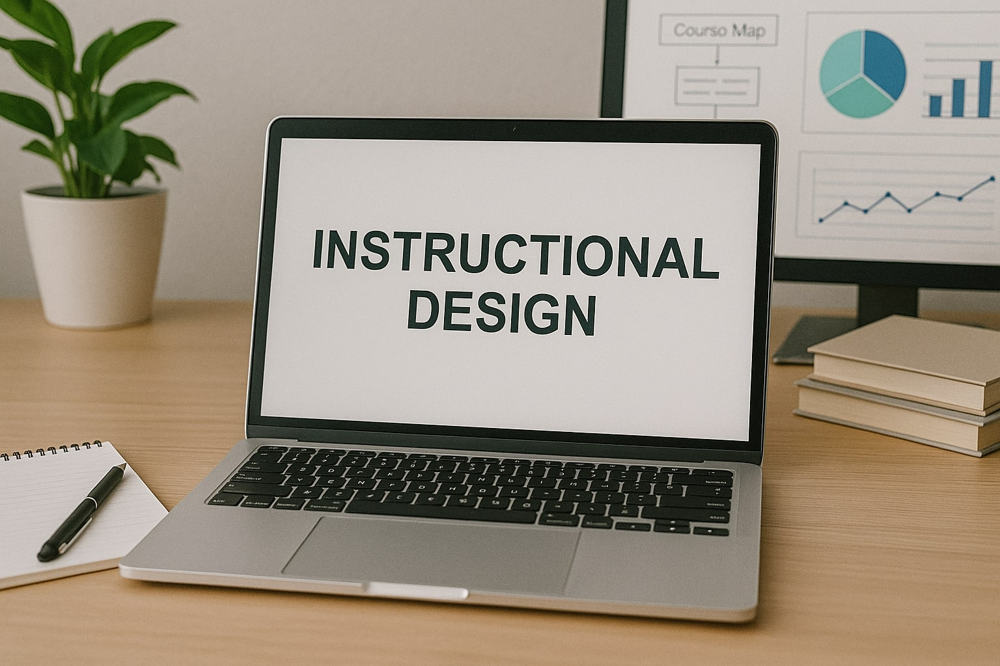
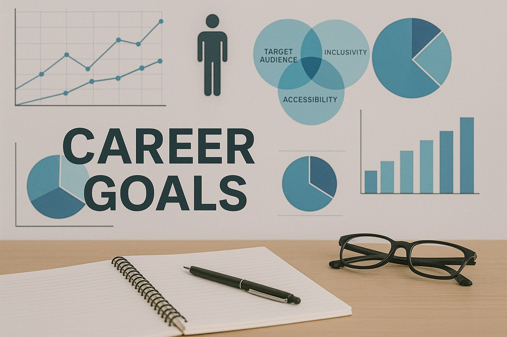
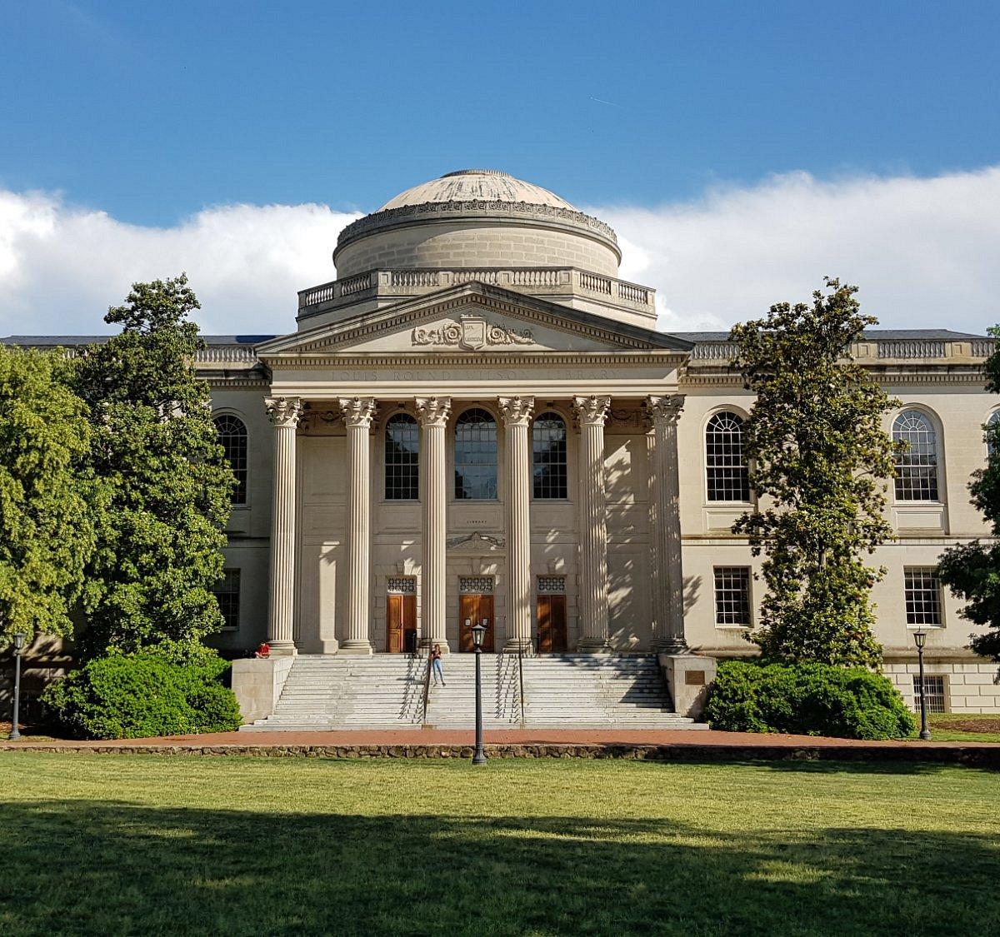

I began my career by completing my undergraduate degree at Stockton University with a BA in Literature and a K-12 Teaching License. After my student teaching placements, I found there was a lack of adaptive technology in the classroom, which made the teaching profession more arduous and dissatifying for falculty and staff. I was then accepted into UNC- Chapel Hills Master of Educational, Innovation, Technology, and Entrepreneurship program, where I am currently learning the technical skills required to develop intential and accessible tools to implement in secondary school classrooms.

My goal while working in the M.E.I.T.E program is to create software that meets the demands of the educational market. I am currently researching financial literacy curriculum and how to encourage students to interact meaningfully with the content on a digitial interface. Throughout my career I will continue promote and develop educational technology that is student-centered and accessible for both students and teachers.

When I’m not designing learning materials, I am learning more about UX/UI design. I am currently taking a course on Figma, a popular design tool for product developers. On campus, I am apart of the Student Technology Council, where students work with the UNC IT Department to create campus inititatives regarding inclusive technology and solution-oriented action. I am also excited to connect with the UX/UI design club to learn more about building digital products!